Existem algumas famílias de operadores, nessa aula veremos os três últimos:
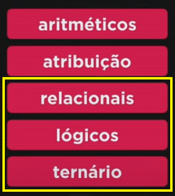O resultado de expressões que tenham operadores relacionais será sempre um valor boleano, ou seja, verdadeiro ou falso.
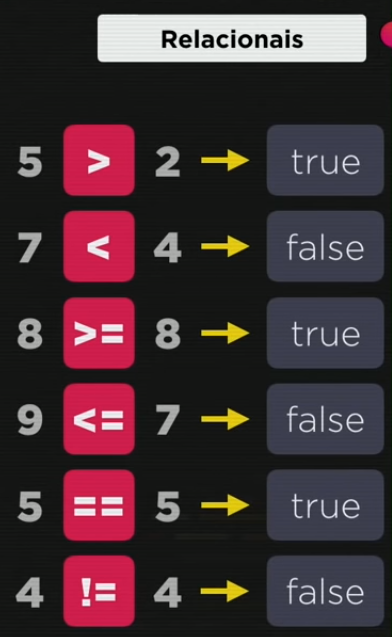No javascript somente 1 símbolo de igual (=) significa recebe, já o sinal == significa de fato o igual/equivale.
O != (exclamação igual) significa não igual, ou seja, diferente.
Aplicação no nodejs:
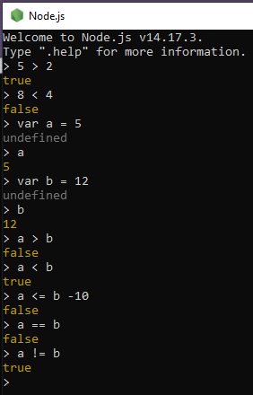Exemplos (tem significado em texto):
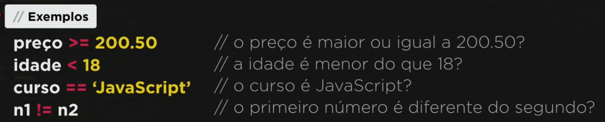Temos os operadores relacionais que chamamos de operadores de identidade também conhecido como operador de igualdade restrita. Usamos o === e testamos se um dado é idênticoao outro, ou seja, se são do mesmo valor e do mesmo tipo. Lê-se 5 idêntico a 5.
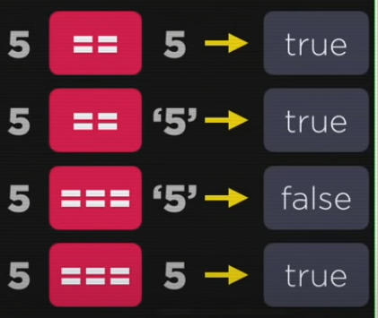O sinal de igualdade não testa o tipo, por isso 5=='5' é verdadeiro.
Aplicação no nodejs:
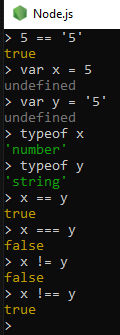O !== é chamado de desigual restrito.

A barra vertical se chama pipe, uma disjunção são nosso 'ou' lógico (em texto). Uma conjunção é um 'e' lógico.
O ! (não/negação) é tratado como operador unário, ou seja só tem um operando que é true ou false. No exemplo uma coisa que não é verdadeira (uma negação ao dado verdade) é uma coisa falsa.Uma coisa que !(NÃO) é false é verdadeira.
Uma conjunção é um operador binário, tenho dois operandos, um de cada lado.
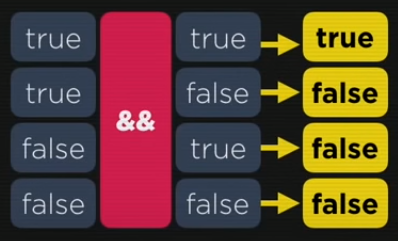No primeiro exemplo acima podemos interpretar como se tenho uma caneta vermelha e tenho uma caneta azul eu fico satisfeito (é uma verdade). Só é verdade com as duas preposições forem verdades, se uma dela é mentira logo o resultado é falso.
Também é um operador binário.
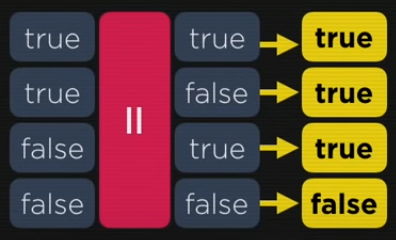Basta que um seja verdadeiro pra que tenho um resultado verdadeiro. Pois quero um ou outro, e se um dele é verdade então minha lógica é verdade também.
Quando eu tenho operadores relacionais e lógicos na mesma expressão a ordem que é feito é: primeiro todos os operadores aritméricos (%), depois os relacionais (>, ==) e por último os operadores lógicos (&&).
Ordem:
No exemplo acima primeiro fazemos o b % 2 que dá 0 (verdade) e depois o a > b que é mentira (falso). Então temos false && true. Essa preposição é uma conjunção false, pois false e true dá false como vimos acima.
Se por acaso tivermos numa mesma expressão um && (e), um || (ou) e um !(não) a ordem de execução será primeiro o ! (não), depois o && (e) e por último o || (ou):
Os operadores relacionais (>, >=, ==) não tem ordem de precedência entre si, quem aparecer primeiro vai ser feito primeiro. Já os logicos tem, como vimos acima.

Ele se chama ternário pois tem 3 partes, unindo três operandos:
Diz o que irá acontecer se nosso teste for verdadeiro e o que irá acontecer se for falso.
No exemplo acima o aluno será aprovado ou reprovado dependendo da média dele.
No nodejs:
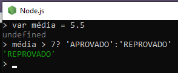Como a média dele foi 5.5 e é menor que 7, ele foi reprovado.
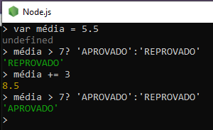No exemplo a seguir se a primeiro preposição for verdade ele aplica o 5 e se for falso será o 9. No caso será o resto de 8/2 que é 0 e 0 é == 0 (igual). Como é verdade meu res terá o valor 5:
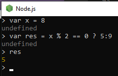Outro exemplo:
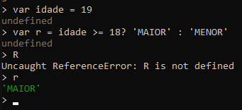